南京工业大学 · 2026届本科毕业设计（论文）答辩
Design of an Intelligent Electronic Peephole Based on AI Face Recognition Technology
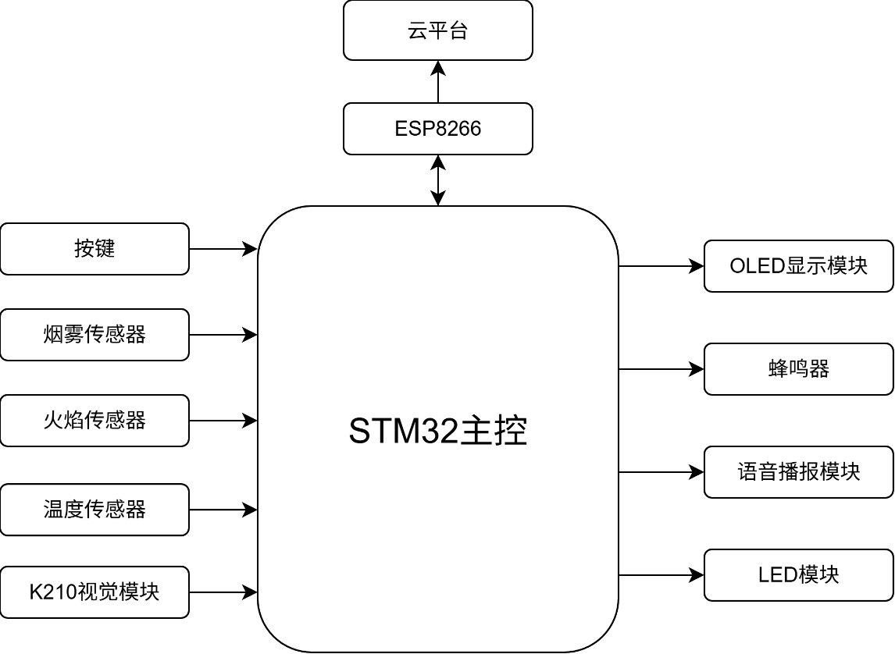
图2-1 整体设计框图 — STM32 主控协调 K210 视觉、环境传感、OLED/语音/蜂鸣器执行及 ESP8266→OneNet 远程交互
建议讲解约 40 秒 3 / 8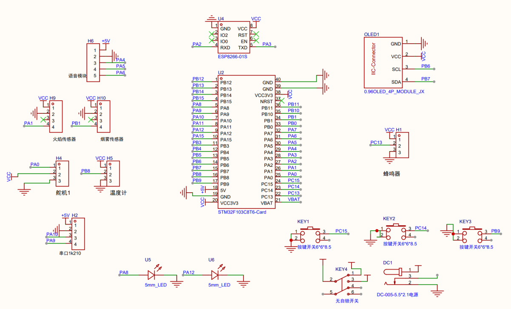
图3-17 系统整体原理图（Altium Designer）
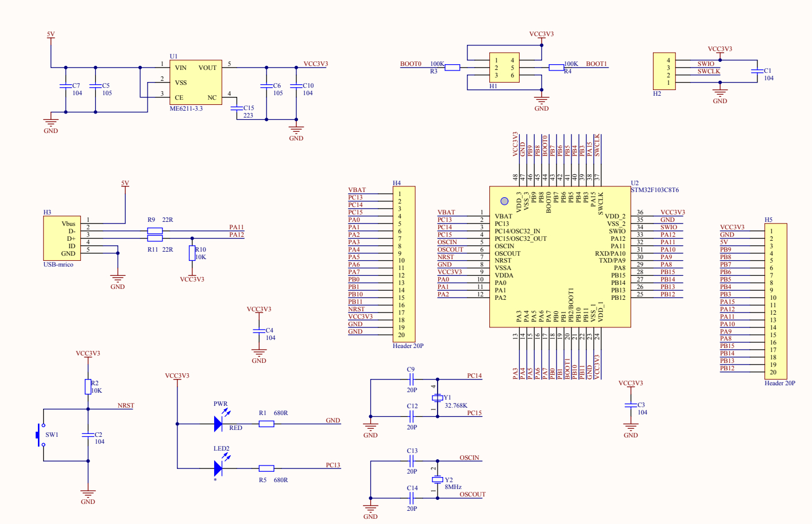
图3-2 STM32F103C8T6 最小系统（电源/复位/时钟/SWD）
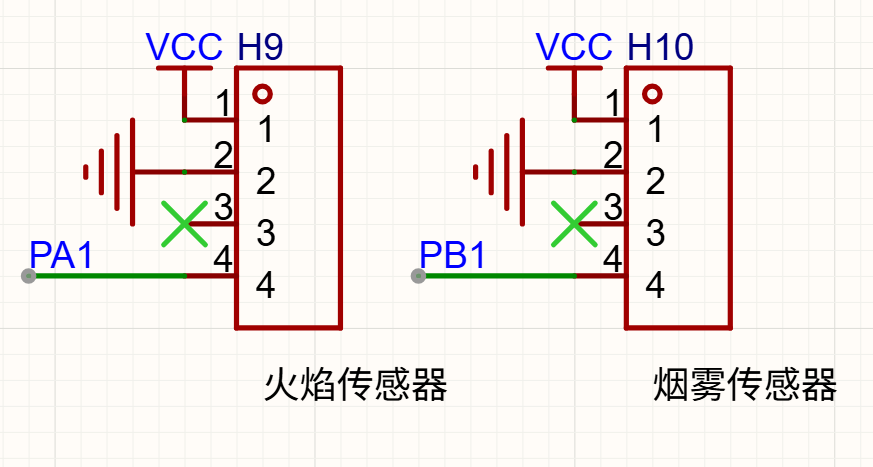
火焰 PA1 / 烟雾 PB1
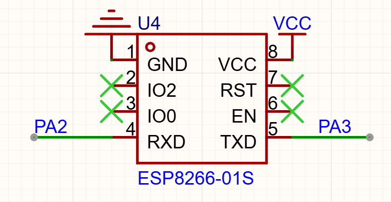
ESP8266 PA2/PA3
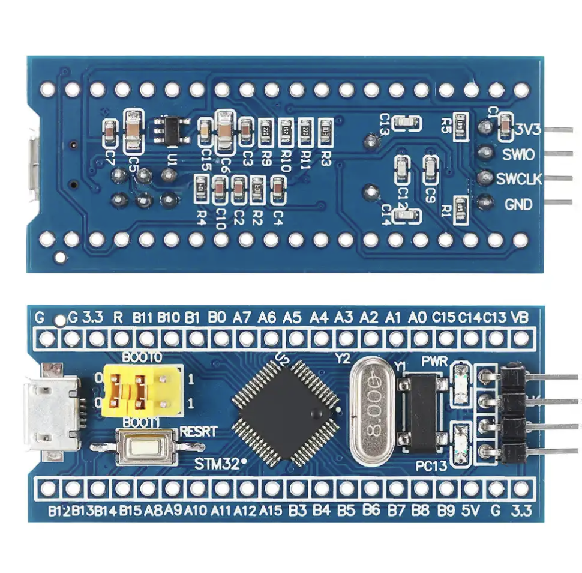
主控模块实物
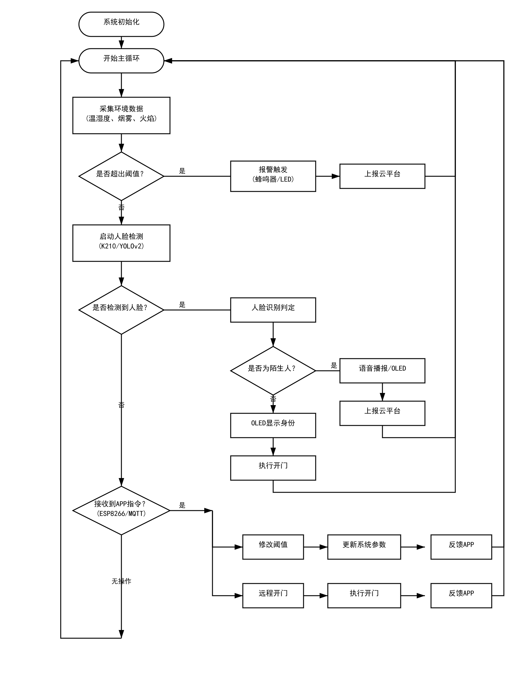
图4-1 系统主流程（环境监测→人脸检测→远程指令）
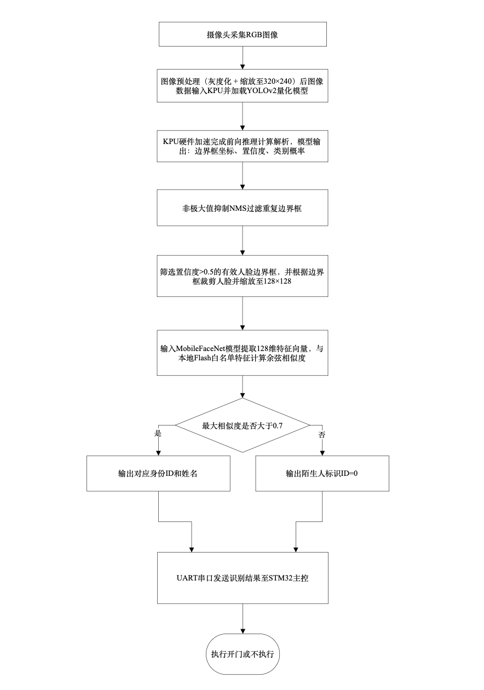
图4-2 K210/YOLOv2 人脸识别子流程
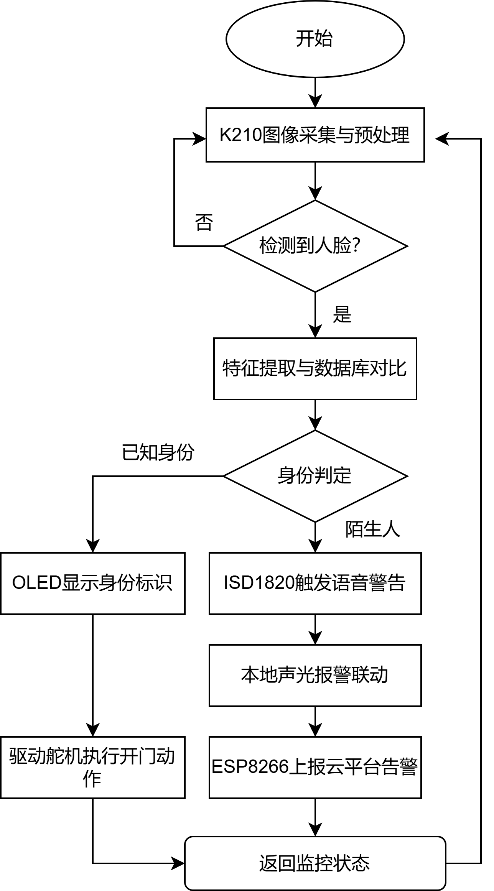
图4-3 人脸检测报警子流程
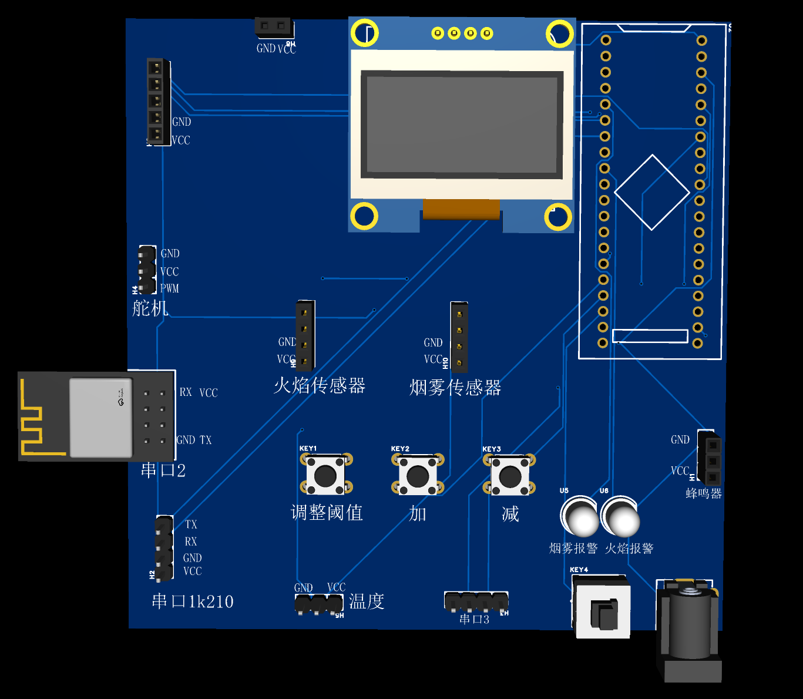
图5-1 PCB 三维示意图（双层板布局布线）
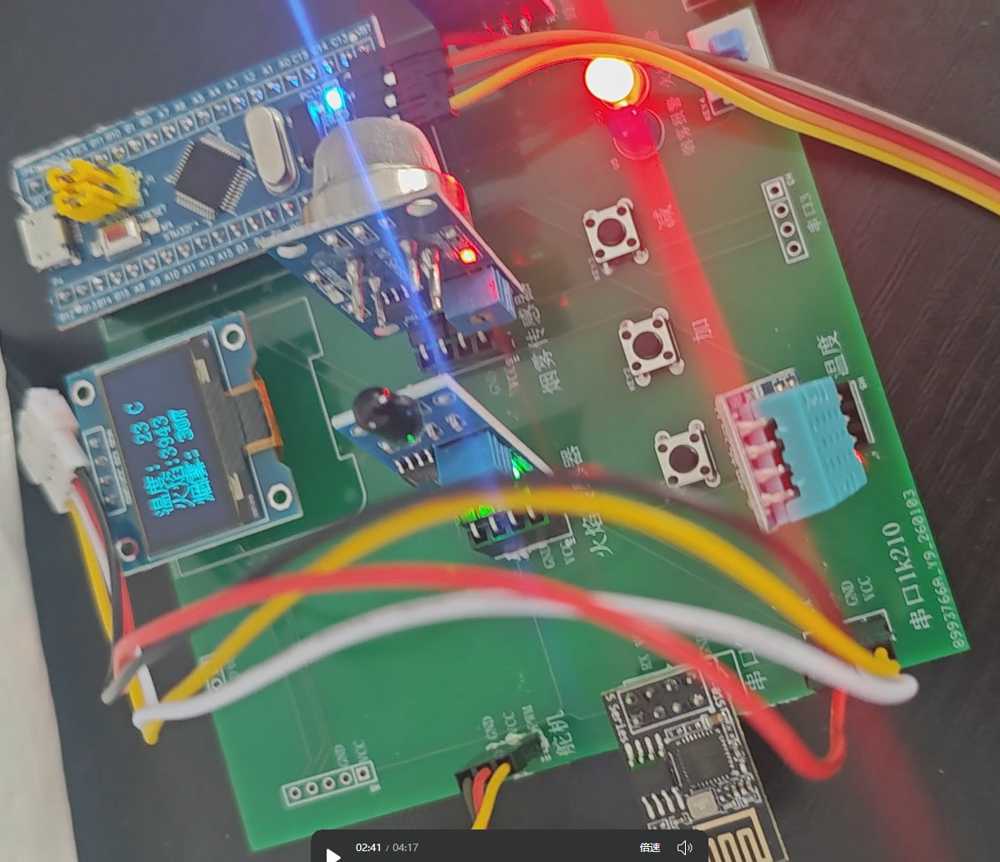
图5-2 焊接完成系统实物（STM32/K210/传感/OLED/WiFi）
| 测试项 | 优化前 | 优化后 |
|---|---|---|
| 暗光识别率 | 81% | 96% |
| 强光识别率 | 84% | 98% |
| 烟雾采样误差 | +0.15V | ±0.01V |
经软硬件联调：已知人脸语音播报+模拟开门；陌生人仅播报不开门；环境异常声光报警并 MQTT 上报。
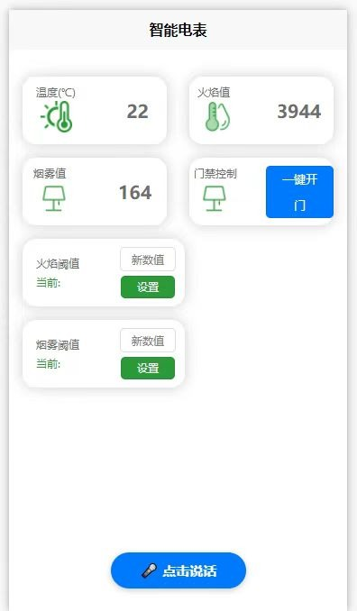
图4-5 / 调试 OneNet 云平台 APP — 温湿度/火焰/烟雾监测、远程开门与阈值设置
衷心感谢导师 朱晓梅 老师，在论文开题、硬件设计修改、正文撰写至定稿全过程给予的悉心指导与包容。
感谢辅导员 秦海燕 老师在学习与生活上的关心与支持。
感谢父母、家人一直以来的默默支持与鼓励。
感谢同学、挚友在毕业设计期间的陪伴与帮助。
感谢各位老师聆听，恳请批评指正！